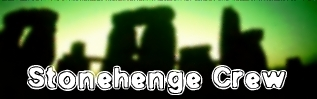
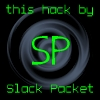

|
Добро пожаловать на еще один сайт, взломанный Slack Packet'ом. Русские очень крутые и все такое, но безопасность оставл ет желать лучшего. Ох да.. Не буду ничего говорить о Югославии. Ничего не могу сказать и об этом сайте, так как нейтрален к Русским. Долгой жизни Греческой Нации. Смерть всем Туркам.
-Slack Packet Shout outs go to ne0h, The Doppelganger, Stuff, gH, mosthated, obsolete, tw1ster, fatcat, Attrition, 2600, #europeanhackers, #grhack@undernet, IC XC Disrespects are always to the Turks, NATO, people who support NATO, Marilyn Manson, Bill Clinton, and other losers. |
